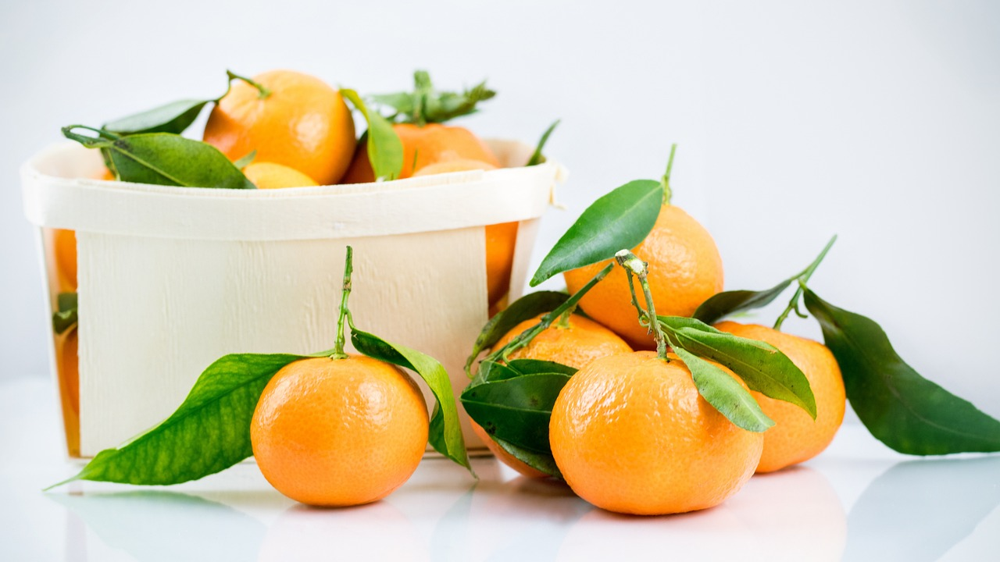
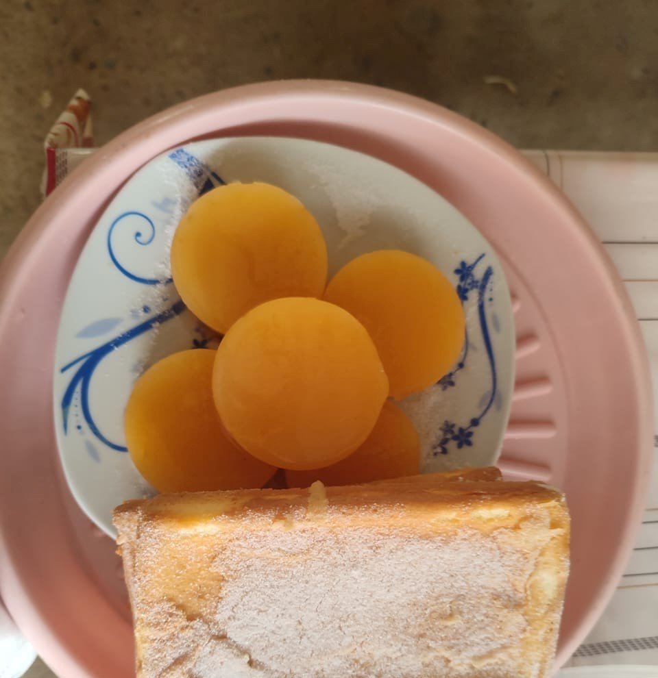
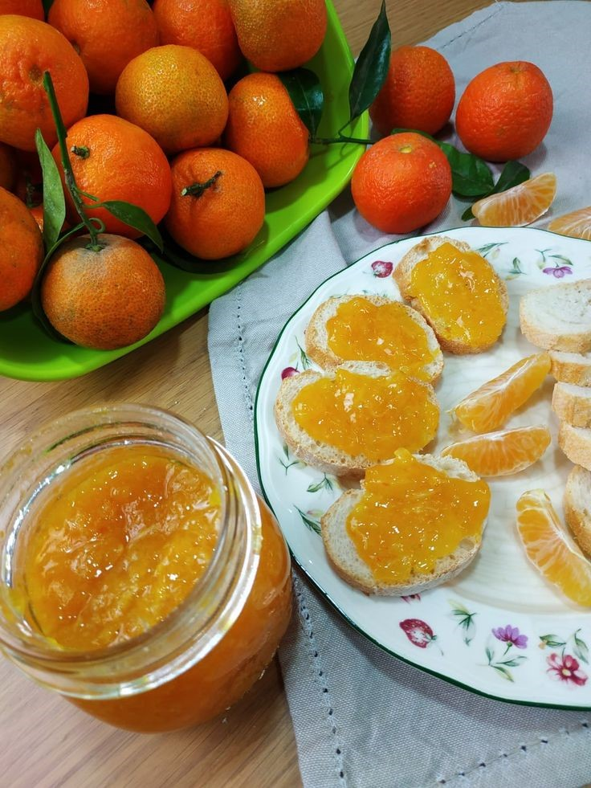
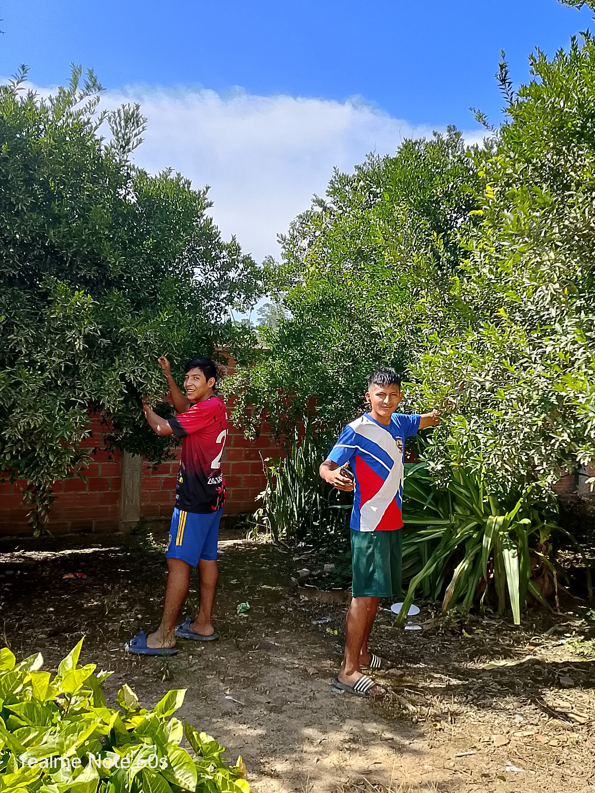
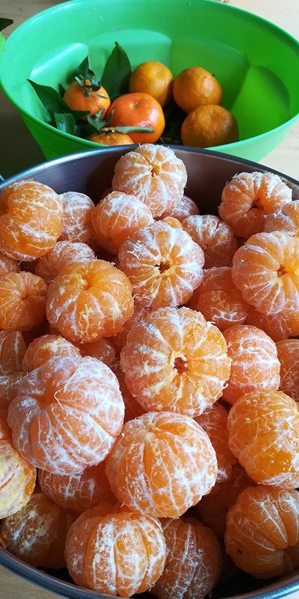

Bienvenido al Mundo de la Mandarina

La mandarina es una fruta cítrica extraordinaria que ofrece infinitas posibilidades culinarias.
Desde deliciosas recetas hasta refrescantes bebidas, la mandarina es sinónimo de sabor, frescura y vitamina C.
DERIVADOS DE LA MANDARINA
EL QUEQUE DE MANDARINA
Es una delicia casera que combina la suavidad de un bizcocho con el sabor cítrico y refrescante de la fruta. Ideal para meriendas, desayunos o reuniones familiares. Su textura es esponjosa y su aroma natural lo hace irresistible.
La Receta
Para crear el queque de mandarina perfecto, necesitas ingredientes simples y frescos. Aquí te dejamos la lista completa.
Ingredientes del Queque de Mandarina
- Huevos
- Harina de trigo
- Azúcar
- Jugo de mandarina
- Ralladura de mandarina
- Aceite vegetal
- Polvo de hornear
PREPARACIÓN
- Batir huevos con azúcar: Batir huevos con azúcar hasta obtener mezcla cremosa.
- Añadir ingredientes: Añadir jugo, ralladura, aceite y harina con polvo de hornear.
- Hornear: Verter en molde engrasado y hornear a temperatura media.
- Enfriar y servir: Dejar enfriar y cortar en porciones individuales.
EL JUGO DE MANDARINA
El jugo de mandarina es una bebida natural y refrescante, rica en vitamina C, perfecta para días calurosos o comidas ligeras. Se sirve frío y sin conservantes, ofreciendo el sabor auténtico de la fruta fresca.
INGREDIENTES
- Mandarinas frescas
- Agua hervida y fría
- Azúcar (opcional)
Preparación
- PASO 1: Lavar y exprimir las mandarinas.
- PASO 2: Mezclar con agua y azúcar al gusto.
- PASO 3: Colar si se desea una textura suave.
- PASO 4: Envasar en botellas limpias y reutilizables.
EL FLAN DE MANDARINA

El flan de mandarina es un postre cremoso con sabor dulce y un toque cítrico. Ideal para cerrar una comida con frescura y elegancia. Su textura suave lo hace especial.
INGREDIENTES DEL FLAN DE MANDARINA
- Leche
- Huevos
- Azúcar
- Jugo de mandarina
- Esencia de vainilla
PREPARACIÓN
- PASO 1: Derretir azúcar para formar caramelo.
- PASO 2: Batir huevos con leche, jugo, azúcar y vainilla.
- PASO 3: Verter mezcla en moldes con caramelo.
- PASO 4: Cocinar a baño maría hasta que esté firme.
LA MERMELADA DE MANDARINA

La mermelada de mandarina es una conserva dulce con un toque cítrico y aromático. Ideal para acompañar desayunos, postres o dar un sabor especial a platos salados. Su textura espesa y brillante la hace única.
INGREDIENTES
- Mandarinas (pulpa y opcionalmente un poco de piel fina)
- Azúcar
- Jugo de limón
PREPARACIÓN
- PASO 1: Pelar y limpiar las mandarinas, retirando semillas y exceso de piel blanca.
- PASO 2: Colocar la pulpa en una olla con azúcar y jugo de limón.
- PASO 3: Cocinar a fuego medio hasta que hierva, luego bajar y dejar espesar removiendo.
- PASO 4: Triturar para lograr una mezcla homogénea.
- PASO 5: Verificar la textura con la prueba del plato frío.
- PASO 6: Envasar caliente en frascos de vidrio esterilizados y cerrar bien.
- PASO 7: Dejar enfriar y conservar en lugar fresco o refrigerar.
Nota Importante
Refrigerar antes de servir.
CRECIMIENTO DE LA MANDARINA

